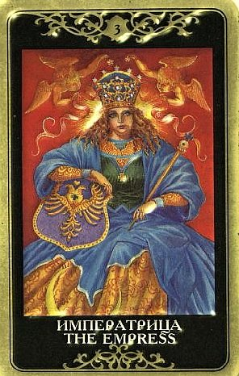

Императрица воплощает собой пробуждение природы и энергию изобилия. Это хорошая карта, есть все основания радоваться ее присутствию в раскладе. Она предвещает насыщенное время, богатое несущими удовлетворение событиями.
Ситуация благоприятствует вопрошающему, причем события развиваются довольно быстро.

Императрице присуща колоссальная животворящая энергетика, поэтому есть все основания полагать, что то, что долго пребывало в спячке, под ее влиянием проснется и даст новые сильные побеги, будь то новый проект, личные отношения, курс оздоровления, строительство дома или брошенная когда-то диссертация.
Любое дело под ее покровительством процветает и разрастается.
На высшем уровне она символизирует Покров и имеет существенное значение Защиты, опеки над судьбой вопрошающего, по крайней мере в настоящее время.
B прямом положении она символизирует созидание, красоту и добро в делах ежедневных и материальных, в чувствах и мыслях.
Ее материнские дары - безопасность, физический и эмоциональный комфорт, наслаждение жизнью, праздник души и тела, иногда – дар взаимной любви.
Что касается временной динамики, то однозначный ответ дать сложно. У Императрицы стопроцентное чутье на естественные процессы развития, поэтому она может описывать как начальное развитие новых начинаний, так и период, когда достигнута стабилизация и идет творческая созидательная фаза, а равно и момент, когда цикл близок к завершению. В традиционных руководствах считается, что последнее наиболее вероятно, и дело уже близится к развязке.
Не исключено, что данная карта - знак того, что в деле замешана какая-то благожелательно настроенная женщина, которая по тем или иным причинам взяла вопрошающего под свое покровительство, или просто играет важную роль в его жизни, чаще всего – любящая и любимая.
В общем, очень хорошая и вполне благоприятная карта, дающая положительный прогноз при ответе практически на любой вопрос.
На физическом уровне это рост, плодородие, на эмоциональном - творческие способности, на уровне разума - богатство идей, изобретательность, а на уровне сознания - познание нового.
ЛИЧНЫЕ ОТНОШЕНИЯ
В делах сердечных все замечательно или будет замечательно в самом скором времени – в этом смысле Императрица обещает бурное развитие.
В особых случаях символизирует скорое замужество (или женитьбу), часто – продолжение рода (при наличии соответствующих Младших Арканов в особенности).
В ведении Императрицы находятся настоящая любовь (а не случайности и безрассудство), брак, материнство, домашняя гармония, зрелая сексуальность.
Она дарит вслеск эмоций, чувственные наслаждения, прекрасную земную любовь, полное доверие и чувство защищенности.
Если в настоящее время в отношениях все плохо, то карта предвещает новые многообещающие перспективы, обретение или смену партнера.
Императрица – символ плодовитости. Если вопрос касается репродуктивных способностей – не о чем беспокоиться, все в порядке. Если вопрос касается беременности – это ответ. За приливом тепла и желания, который несет этот Аркан, прибавление семейства следует самым естественным образом, по законам природы. Карта является указанием на зачатие (и на незапланированное в том числе!).
Разумеется, чаще всего эта карта описывает поведение женщины. Если карта выпадет в раскладе на мужчину, она может отражать присутствие в его жизни другой женщины, чье влияние на этого человека очень велико. Но нередко бывает и так, что Императрица описывает те энергии, которые этот мужчина вносит в отношения (особенно это свойственно представителям водных, реже земных знаков). Это заботливость, преданность, самоотверженность, глубокая привязанность, страсть, самозабвенная жажда единения и желание во что бы то ни стало обзавестись ребенком («мог бы – сам родил бы»), упрямствующая подруга может только диву даваться.
Но упрямствовать ей, скорее всего, осталось недолго - сила Императрицы чрезвычайно велика, ее ни в коем случае нельзя недооценивать. Ей свойственен перевес чувств над разумом, да, но это сила, которой никто, и даже Император (любого пола) толком ничего не может противопоставить. Она способна подчинить его себе – и питать его всем своим существом, угадывая малейшие желания и стараясь предоставить максимальную заботу. Это очень яркая личность, она решительна и тверда, умеет бороться за желаемое, идя к этому прямо или с помощью хитрости. Этот человек мудр и и в любви практически ясновидящ, он отдается отношениям целиком. Он ценит уют, покой, ласку и доверяет мудрости естества.